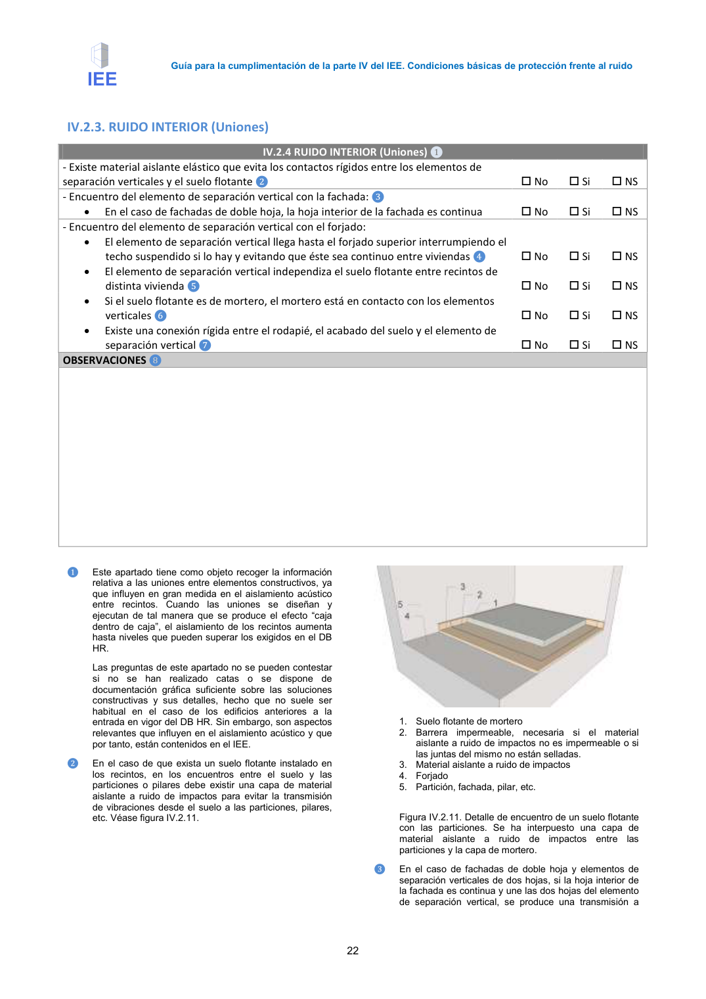
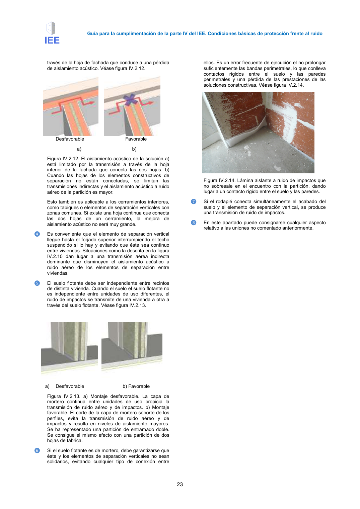
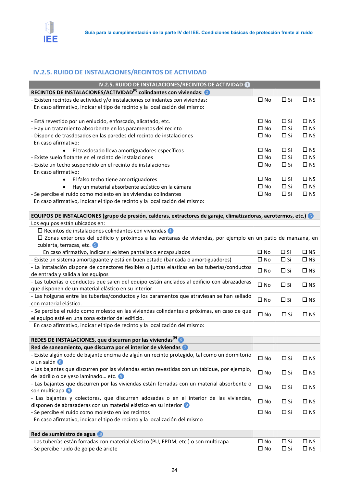

<!doctype html>
<html lang="es"><head><meta charset="utf-8">
<meta name="viewport" content="width=device-width, initial-scale=1">
<title>Anejo 3. Valoración del aislamiento acústico de elementos de separación horizontales y sus mejoras / IV.2.3. RUIDO INTERIOR (Uniones)</title><link rel="stylesheet" href="../estilo.css">
</head><body>
<nav><a href="../index.html">Índice</a> › <a href="../doc/guia-pdf-a5d4ef5252ba-2016-11-01-813669d3066c.html">GUIA</a></nav>

<h1>Anejo 3. Valoración del aislamiento acústico de elementos de separación horizontales y sus mejoras / IV.2.3. RUIDO INTERIOR (Uniones)</h1>
<header class="meta"><p><strong>IEE 2016</strong> · edición 2016-11-01 · capa guia</p>
<p>Documento <code>GUIA-PDF-a5d4ef5252ba</code> · SHA-256 del PDF <code>813669d3066c0ff79457d57b80b0512a4fbb248bc5db1f7baf473c369a064738</code></p>
<p><a href="../../contenido/docs/GUIA-PDF-a5d4ef5252ba/2016-11-01__813669d3066c/fuente.pdf">Copia fiel del PDF fuente</a> · <a href="https://www.codigotecnico.org/pdf/Documentos/HR/IEE_2016.pdf">Fuente oficial</a></p>
<p><a href="https://www.codigotecnico.org/Guias/GuiaIEE_HR.html">Ficha de la disposición en la fuente oficial</a></p>
<div class="cita"><p><a href="../../contenido/docs/GUIA-PDF-a5d4ef5252ba/2016-11-01__813669d3066c/fuente.pdf#page=2">Créditos y autoría en el PDF fuente</a>. Reproducción con cita de fuente y autores.</p>
<p>Permiso literal: Se permite la reproducción del contenido total o parcial de esta Guía siempre y cuando se haga citando la fuente original.</p>
<details><summary>Leer los créditos completos y la autoría</summary><pre class="literal">                    Guía para la cumplimentación de la parte IV del IEE. Condiciones básicas de protección frente al ruido


Dirección y coordinación

Luis Vega Catalán

Mª Cristina Colomo Fernández

Eduardo González de Prado

Dirección General de Arquitectura, Vivienda y Suelo. Ministerio de Fomento

Mª Teresa Carrascal García

Instituto de Ciencias de la Construcción Eduardo Torroja. IETcc- CSIC


Autores

Mª Teresa Carrascal García

Amelia Romero Fernández

Mª Belén Casla Herguedas

Unidad de Calidad en la Construcción del Instituto de Ciencias de la Construcción Eduardo Torroja IETcc- CSIC


Se agradece la colaboración de


Belén Delgado Giménez

Fundación FIDAS

Alberto Esteban González

C.T.O. Estudios y proyectos – Gikesa

Giovanni Muzio

C.T.O. Estudios y proyectos

Francisco Labastida Azemar

Arquitecto, asesor CSCAE

Pedro F. Nogueira López

Universidad de A Coruña

Alejandro Sansegundo Sierra

Acústica SanSegundo


Esta Guía para la cumplimentación de la parte IV del IEE. Condiciones básicas de protección frente al ruido, nace en el marco del

convenio de colaboración llevado a cabo entre el Ministerio de Fomento y el Instituto de Ciencias de la Construcción Eduardo Torroja y

forma parte de la estrategia de este Ministerio de generar una serie de documentos de ayuda que faciliten la aplicación de la normativa

de la edificación y que en este caso concreto, ofrezca a los técnicos criterios para poder realizar una evaluación del estado inicial de las

edificaciones en lo referente a las condiciones acústicas de las viviendas existentes y plantear medidas que incrementen su confort

acústico.


En la redacción de este documento se ha utilizado algunos de los contenidos y de las figuras de la Guía de aplicación del DB HR

Protección frente al ruido. Dicha guía puede consultarse en:

http://www.codigotecnico.org/index.php/menu-documentos-complementarios/menu-guia-aplicacion-db-hr


Se permite la reproducción del contenido total o parcial de esta Guía siempre y cuando se haga citando la fuente original.


                                                2</pre></details></div>
<div class="aviso"><strong>Alcance y límites</strong><ul><li>Extracción automática sin revisión técnica humana completa. Contraste tablas, fórmulas, notas y excepciones con el PDF. La edición disponible no determina la vigencia ni la aplicabilidad a un proyecto.</li><li>Guia o documento divulgativo; no es texto normativo.</li><li>Extracción automática; el cotejo humano está pendiente.</li><li>Semántica y tablas no equivalen a validación exhaustiva.</li></ul></div></header>
<div class="cita">ID técnico a0015 · páginas físicas <a href="../pagina/guia-pdf-a5d4ef5252ba-2016-11-01-813669d3066c__p0022.html">22</a>, <a href="../pagina/guia-pdf-a5d4ef5252ba-2016-11-01-813669d3066c__p0023.html">23</a>, <a href="../pagina/guia-pdf-a5d4ef5252ba-2016-11-01-813669d3066c__p0024.html">24</a></div>
<nav><a href="guia-pdf-a5d4ef5252ba-2016-11-01-813669d3066c__a0014.html">← a0014</a> · <a href="guia-pdf-a5d4ef5252ba-2016-11-01-813669d3066c__a0016.html">a0016 →</a></nav>
<p>Formatos: <a href="../../contenido/docs/GUIA-PDF-a5d4ef5252ba/2016-11-01__813669d3066c/apartado/a0015__iv-2-3-ruido-interior-uniones.json">JSON del segmento</a> · <a href="../../contenido/docs/GUIA-PDF-a5d4ef5252ba/2016-11-01__813669d3066c/apartado/a0015__iv-2-3-ruido-interior-uniones.md">Markdown</a></p>
<pre class="literal">IV.2.3. RUIDO INTERIOR (Uniones)
IV.2.4 RUIDO INTERIOR (Uniones) ❶
- Existe material aislante elástico que evita los contactos rígidos entre los elementos de
separación verticales y el suelo flotante ❷
 No
 Si
 NS
- Encuentro del elemento de separación vertical con la fachada: ❸
•
En el caso de fachadas de doble hoja, la hoja interior de la fachada es continua
 No
 Si
 NS
- Encuentro del elemento de separación vertical con el forjado:
•
El elemento de separación vertical llega hasta el forjado superior interrumpiendo el
techo suspendido si lo hay y evitando que éste sea continuo entre viviendas ❹
 No
 Si
 NS
•
El elemento de separación vertical independiza el suelo flotante entre recintos de
distinta vivienda ❺
 No
 Si
 NS
•
Si el suelo flotante es de mortero, el mortero está en contacto con los elementos
verticales ❻
 No
 Si
 NS
•
Existe una conexión rígida entre el rodapié, el acabado del suelo y el elemento de
separación vertical ❼
 No
 Si
 NS
OBSERVACIONES ❽
❶
Este apartado tiene como objeto recoger la información
relativa a las uniones entre elementos constructivos, ya
que influyen en gran medida en el aislamiento acústico
entre recintos. Cuando las uniones se diseñan y
ejecutan de tal manera que se produce el efecto “caja
dentro de caja”, el aislamiento de los recintos aumenta
hasta niveles que pueden superar los exigidos en el DB
HR.
Las preguntas de este apartado no se pueden contestar
si no se han realizado catas o se dispone de
documentación gráfica suficiente sobre las soluciones
constructivas y sus detalles, hecho que no suele ser
habitual en el caso de los edificios anteriores a la
entrada en vigor del DB HR. Sin embargo, son aspectos
relevantes que influyen en el aislamiento acústico y que
por tanto, están contenidos en el IEE.
❷
En el caso de que exista un suelo flotante instalado en
los recintos, en los encuentros entre el suelo y las
particiones o pilares debe existir una capa de material
aislante a ruido de impactos para evitar la transmisión
de vibraciones desde el suelo a las particiones, pilares,
etc. Véase figura IV.2.11.
1. Suelo flotante de mortero
2. Barrera impermeable, necesaria si el material
aislante a ruido de impactos no es impermeable o si
las juntas del mismo no están selladas.
3. Material aislante a ruido de impactos
4. Forjado
5. Partición, fachada, pilar, etc.
Figura IV.2.11. Detalle de encuentro de un suelo flotante
con las particiones. Se ha interpuesto una capa de
material aislante a ruido de impactos entre las
particiones y la capa de mortero.
❸
En el caso de fachadas de doble hoja y elementos de
separación verticales de dos hojas, si la hoja interior de
la fachada es continua y une las dos hojas del elemento
de separación vertical, se produce una transmisión a

Guía para la cumplimentación de la parte IV del IEE. Condiciones básicas de protección frente al ruido
23
través de la hoja de fachada que conduce a una pérdida
de aislamiento acústico. Véase figura IV.2.12.
Desfavorable
Favorable
a)
b)
Figura IV.2.12. El aislamiento acústico de la solución a)
está limitado por la transmisión a través de la hoja
interior de la fachada que conecta las dos hojas. b)
Cuando las hojas de los elementos constructivos de
separación no están conectadas, se limitan las
transmisiones indirectas y el aislamiento acústico a ruido
aéreo de la partición es mayor.
Esto también es aplicable a los cerramientos interiores,
como tabiques o elementos de separación verticales con
zonas comunes. Si existe una hoja continua que conecta
las dos hojas de un cerramiento, la mejora de
aislamiento acústico no será muy grande.
❹
Es conveniente que el elemento de separación vertical
llegue hasta el forjado superior interrumpiendo el techo
suspendido si lo hay y evitando que éste sea continuo
entre viviendas. Situaciones como la descrita en la figura
IV.2.10 dan lugar a una transmisión aérea indirecta
dominante que disminuyen el aislamiento acústico a
ruido aéreo de los elementos de separación entre
viviendas.
❺
El suelo flotante debe ser independiente entre recintos
de distinta vivienda. Cuando el suelo el suelo flotante no
es independiente entre unidades de uso diferentes, el
ruido de impactos se transmite de una vivienda a otra a
través del suelo flotante. Véase figura IV.2.13.
a)
Desfavorable
b) Favorable
Figura IV.2.13. a) Montaje desfavorable. La capa de
mortero continua entre unidades de uso propicia la
transmisión de ruido aéreo y de impactos. b) Montaje
favorable. El corte de la capa de mortero soporte de los
perfiles, evita la transmisión de ruido aéreo y de
impactos y resulta en niveles de aislamiento mayores.
Se ha representado una partición de entramado doble.
Se consigue el mismo efecto con una partición de dos
hojas de fábrica.
❻
Si el suelo flotante es de mortero, debe garantizarse que
éste y los elementos de separación verticales no sean
solidarios, evitando cualquier tipo de conexión entre
ellos. Es un error frecuente de ejecución el no prolongar
suficientemente las bandas perimetrales, lo que conlleva
contactos rígidos entre el suelo y las paredes
perimetrales y una pérdida de las prestaciones de las
soluciones constructivas. Véase figura IV.2.14.
Figura IV.2.14. Lámina aislante a ruido de impactos que
no sobresale en el encuentro con la partición, dando
lugar a un contacto rígido entre el suelo y las paredes.
❼
Si el rodapié conecta simultáneamente el acabado del
suelo y el elemento de separación vertical, se produce
una transmisión de ruido de impactos.
❽
En este apartado puede consignarse cualquier aspecto
relativo a las uniones no comentado anteriormente.

Guía para la cumplimentación de la parte IV del IEE. Condiciones básicas de protección frente al ruido
24</pre>
<figure><a href="../../contenido/docs/GUIA-PDF-a5d4ef5252ba/2016-11-01__813669d3066c/figura/p0022.png"></a><figcaption>Página visual 22, para contrastar fórmulas, tablas y figuras.</figcaption></figure>
<figure><a href="../../contenido/docs/GUIA-PDF-a5d4ef5252ba/2016-11-01__813669d3066c/figura/p0023.png"></a><figcaption>Página visual 23, para contrastar fórmulas, tablas y figuras.</figcaption></figure>
<figure><a href="../../contenido/docs/GUIA-PDF-a5d4ef5252ba/2016-11-01__813669d3066c/figura/p0024.png"></a><figcaption>Página visual 24, para contrastar fórmulas, tablas y figuras.</figcaption></figure>
<footer>Generado estáticamente desde el corpus normalizado; sin JavaScript ni servicios externos. El HTML es una vista reproducible; conserve la fuente y la edición al citar.</footer>
</body></html>
